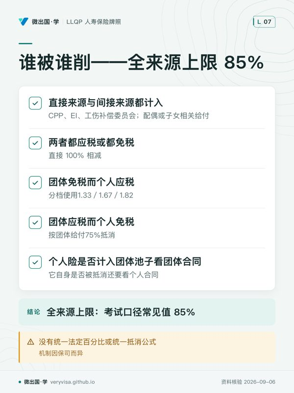

核实日期：2026-09-05｜本页现行数字的出处：EI 病假福利（Government of Canada (ESDC)（论坛解读））、CPP 伤残给付金额（Government of Canada (ESDC)（论坛解读））、WorkSafeBC 工资损失给付（WorkSafeBC（论坛解读））、BC MSP（BC 省政府（论坛解读））；产品条款出处见第四节。 复核周期：2027-09-01（先核 EI 临时措施窗口，官方已延至 2027-10-09 前开始的新申领；年度数字另在2027年1月复查）。EI 与 CPP-D 的金额每年调整，WorkSafeBC 工资计算上限已补官方年度决定；转换窗口天数与全来源上限的裁决方式见第二、三节。
0. 这一篇解决什么问题
你要考的是 意外与疾病保险模块（Accident and Sickness Insurance），本篇对应 CISRO 能力组件 c2「分析可用产品」，占本模块 30%——是本模块第二大的权重块，且伤残保险（disability insurance，DI）是这一组件里篇幅最长、算数题最密的一章。
这一篇讲的不是「伤残险是什么」，而是一个人失去工作能力之后，钱会从哪几个口袋里、按什么顺序、被谁削减着流出来。加拿大人失能时面对的从来不是一份保单，而是一张由团体短期伤残、EI 病假、团体长期伤残、CPP 伤残给付、WorkSafeBC 工伤给付、以及个人自购保单拼成的网——它们互相抵消、互相排队，而决定客户最后到手多少的，往往不是保额，是抵消规则。
这一篇帮你做到三件事：① 拿到一份客户的保障清单，判断哪几笔会互相抵消、哪几笔不会；② 给出四种残疾定义（definition of disability）中的任意一种，判断某个具体情形赔不赔；③ 把「等待期／给付期／复发条款／全来源上限」四个最爱出算数题的机制算对。
一、制度设计与底层逻辑：为什么伤残险要持续核对工作能力
本节回答This section answers 怎么按四种残疾定义和三种续保等级判断保单赔不赔、能不能涨价How to evaluate whether a policy pays benefits or permits premium increases based on four disability definitions and three renewability provisions 本章考题 1Question 1
1. 它承保的不是一个事件，而是一种持续状态
人寿保险的触发条件是一个事件：人死了，赔。伤残保险的触发条件是一种状态：这个人现在还能不能工作？状态会变化、会争议、会随时间收紧——所以伤残险的合同不像寿险那样只定义「赔多少」，它要花大量条款去定义「什么叫残疾」「残疾多久之后开始赔」「赔多久」「复工了怎么算」「复发了怎么算」。
由此产生了本章的第一条底层逻辑：在伤残险里，定义即价格，定义即赔付。两份保额完全相同、保费相差一倍的保单，应比较残疾定义（definition of disability）、续保等级（renewability）、等待期（waiting period）、给付期、职业和健康条件，而不是在保额上。
2. 保险公司与客户在博弈什么：复工激励
伤残险的赔付如果太接近甚至超过客户原来的收入，客户就没有回去工作的动力——这在保险业称为道德风险（moral hazard）。所以核保端有一条几乎行业通用的天花板：个人 DI 的可承保额一般不超过投保人税前收入的 60% 至 66.66%（考试口径 2022 给出的行业惯例区间，不是任何官方规定的数值）。这个比例看起来很吝啬，但要配合另一件事一起看——个人自费购买的 DI，给付是免税的。60% 的免税收入，落到手上往往接近原来税后收入的八成。
同一条逻辑在团体险那边表现为全来源上限（all-source maximum）：主合同（master contract）规定所有来源加起来不得超过失能前税前收入的某个比例，考试口径给出的常见值是 85%。超出的部分不是退给客户，而是把团体险的给付削下来。第三节会把这笔账逐步算给你看。
3. 法律后果：赔不赔取决于定义，不取决于「他看起来很惨」
伤残定义是理赔需要核对的重要条款；没有拒赔统计，不能把争议大多数归于某一种原因。一个能坐着操作电脑的程序员在推定残疾条款（presumptive disability）下可以边全薪上班边领全额给付；而一个明明痛苦不堪、只是还能从事其他匹配技能工作的体力劳动者，在 any occupation 定义下拿不到一分钱。这不是公平不公平的问题，是合同定义本身写成了什么样。代理人的执业风险也集中在这里：卖了一份 any occ 的便宜保单却让客户以为买的是 own occ，理赔时的责任会落回到你身上。
4. 四种残疾定义：从宽到严的那把尺子
这张表是整个 A&S 模块最长青、复用次数最多的框架。后面讲重疾、讲营业费用险（BOE）、讲买卖协议伤残买断险时，你都要回到这张表上判断「这份合同用的是哪一级」。

| 位次 | 定义（en） | 中文 | 判「残疾」的门槛 | 复工／兼职怎么处理 | 典型出现在 |
|---|---|---|---|---|---|
| 最宽 ① | own occupation（own occ） | 本职定义 | 不能履行本职业的全部主要职责，即算全残 | 可以从事其他工作甚至赚得更多，给付照发不减 | 高保费的个人险；专业人士（医生、律师、牙医） |
| ② | regular occupation（regular occ） | 常规职业定义 | 门槛与 own occ 相同 | 残疾定义本身不要求你改做别的职业；但你自愿复工后给付会被减、甚至归零（合同里另有康复条款，见下方提示框） | 大多数职业类别都能买到；团体险里叫另一个名字（见下方提示框） |
| ③ | any occupation（any occ） | 任何职业定义 | 必须不能从事任何与你教育、训练、经验相匹配的工作 | 有匹配的工作可做即不算残疾，直接停付 | 团体 LTD 满一定年限后自动切换到这一级；廉价保单 |
| 最严 ④ | total disability according to CPP | CPP 全残定义 | 须同时满足「严重（severe）」且「持久（prolonged）」——伤残使人经常不能从事实质有收益的工作，且长期、期限不确定或很可能致死 | 另须满足年龄和缴费条件，不能仅凭不能做原工作判断 | 联邦 CPP 伤残给付（CPP-D）的判定 |
⚠️
团体险里的 own occupation ≠ 个人险里的 own occupation
这是本章最容易被参考书和网络二手资料讲错的一处。考试口径 §2.3.2.1 明确指出：团体伤残险合同里写的 "own occupation"，其实际效果等同于个人险里的 "regular occupation"——也就是说，团体险的 own occ 是「你不能做本职工作就算残疾，但如果公司给你安排了匹配的岗位，你只能二选一：接下岗位，或者领给付，不能两者兼得」。
实务里还要再加一层：多数团体 LTD 合同另有康复条款，拒绝参加保险公司认为合理的康复计划或康复性岗位，给付可以被暂停或终止。例如 McGill 大学的 iA 团体 LTD 把「拒绝参加康复计划，或拒绝从事保险公司及其顾问医生认为合理的康复性就业之日」列为给付终止日（McGill HR 现行页）；BC 医疗卫生福利信托的 Canada Life 计划写明未充分配合推荐的康复计划可暂停给付，须走申诉恢复（HBT 申诉说明 2025）。所以「二选一」是考试口径对定义的说法；落到真实合同，拒绝合理的替代岗位往往不是一个可以无代价选择的选项，以手上那份合同的康复条款为准。 所以看到题干里出现「团体计划的 own occupation 定义」，不要按上表第①级去推「兼职他业不影响给付」，要按第②级推。判断的诀窍是先看这是个人保单还是团体保单，再去定位它在四级光谱上的真实位置。
5. 三种续保等级：保险公司能不能改主意
残疾定义决定「赔不赔」，续保等级决定「这份合同将来还算不算数」。
| 等级（en） | 中文 | 保险公司能单方调保费吗 | 能改保障内容吗 | 能撤单吗 | 保费 | 典型买家 |
|---|---|---|---|---|---|---|
| non-cancellable（"non-can"） | 不可撤销 | 不能（保费表在发单时锁死到约定年龄） | 不能 | 不能 | 最高 | 高收入专业人士；最看重确定性的自雇者 |
| guaranteed renewable | 保证续保 | 能，但只能整类调（同一职业／同一发单年份等一整个类别一起调，须提前书面通知），不能单独针对某一个人加价 | 不能 | 不能，必须年年续保 | 中 | 大多数中等收入投保人 |
| cancellable | 可撤销 | 能 | 能 | 能，保险公司可单方终止 | 最低 | 高风险职业、其他等级买不到的人 |
考试口径另给出一条长青安排：non-can 保单的持有人到 65 岁时，通常可以无需医疗核保转换为 guaranteed renewable 合同，代价是给付期缩短到一两年、保费按转换时年龄重定，合同通常延续到 72 或 75 岁。这一条常被拿来出「65 岁以后还有没有保障」的辨析题。
ℹ️
「保证承保（guaranteed issue）」是核保概念，不是续保概念
guaranteed issue 指符合计划资格即可承保，不仅仅是免体检；简化核保仍可能健康问卷不通过而拒保（常见于面向医生、律师等低风险专业群体的计划），与上表三级续保等级是两个维度。题干把二者混在一起是常见干扰手法：一份 guaranteed issue 的保单完全可以是 cancellable 的。
二、2026 现行政策与数字：考试口径写的和柜台用的不是一回事
本节回答This section answers 政府给付现行标准与考试口径的差异，以及团体离职转换权机制How to navigate differences between current government benefit standards and exam standards, as well as group termination conversion privileges 本章考题 2Question 2
伤残险这一章是本模块考试口径过期密度最高的一章，原因是它大量引用政府给付项目，而政府给付每年都在动。以下所有现行数字都挂了 LWS 出处并标了年份快照；凡考试口径给出的行业惯例值（60–66.66%、70–75%、50–60%、85%、90 天保费豁免等待期、6 个月复发窗口）都不是官方数值，逐份合同会不同，本页一律标注为「考试口径 2022 行业惯例」。
1. 考场与现行对照表之一：EI 病假福利的周数与周给付（本模块最高优先级错位）
| 考试口径 2022 说 | 2026 现行 | 考场答·柜台做 | |
|---|---|---|---|
| 病假给付最长周数 | 15 周（1 周等待期之后）。原文锚句："EI has a maximum 15-week benefit period after a waiting period of one week"，且考试口径 ch02／ch06／ch08 三处重复同一旧口径 | 最长 26 周。2022-12-18 起 Bill C-30 生效（Government of Canada (ESDC)（论坛解读），canada.ca 现行页原文 "up to 26 weeks of financial assistance"） | 柜台一律用 26 周；考场若题干出现周数，先看题干有没有自带数字，题干给了就用题干的。CISRO 公开样题 10 题中无一道考此数值，但不能排除命题方仍按考试口径旧口径 |
| 收入替代比例与周上限 | 55%，2022 年上限 $638/周（考试口径 ch06） | 55%，上限 $729/周（Government of Canada (ESDC)（论坛解读），2026-09-04 抓取） | 柜台用 $729；考场遇到具体金额题极少，遇到就按题干 |
| 资格 | 提交医疗证明 | 仍需 "medical certificate showing that you're unable to work for medical reasons"（Government of Canada (ESDC)（论坛解读）） | 一致，无冲突 |
2. 考场与现行对照表之二：考试口径自己的两处不一致——团体转个人的转换窗口
| 考试口径 ch02 §2.3.3.3 说 | 考试口径 ch07 §7.4.4 说 | 考场答·柜台做 | |
|---|---|---|---|
| 退出团体计划后申请转个人险的窗口 | 终止参加团体计划后 30 天内 | 离开计划后 31 天内 | 同一本考试口径前后不一致，本页不擅自裁定哪个对。考场遇到具体天数，以题干给出的合同条款为准；柜台一律翻客户手上那份主合同 |
这条冲突已回真实保司文件核实过，结论不是「30 和 31 哪个对」，而是这条规则根本没有全行业统一的天数与起算点。找到的实例是 Canada Life 团体长期伤残转换申请表（表格 70-0095，2/20 版）：条文原文是「须在新工作开始日起 31 天内寄出申请，且不超过旧工作结束日起 6 个月」——起算点是新工作开始日，既不是「团体计划终止日」（考试口径 ch02 的说法）也不是单纯「离职日」（考试口径 ch07 的说法）。这印证了 CLHIA G3（团体寿险与团体健康险行业指引）虽覆盖这一议题，但该指引限会员取阅，无法逐字核验统一天数——这不足以证明所有省份均无法律保护；例如 BC s.116 对团体合同替换的责任衔接另有规定，不能与个人转换权混为一谈。柜台的正确动作永远是翻阅客户实际拿到的转换申请表，而不是套用任何一本考试口径或指引的通用天数。
✕
不要背这个数，要记住这个机制
转换权的价值不在天数，在于免医疗核保。一个刚查出高血压、刚离职的客户，如果错过这个窗口，个人市场上他可能根本买不到；接得上，他就能把团体保障平移成自己名下的保单。所以代理人要做的事是：客户一说「我下个月离职」，当天就去核他的转换权申请表上写的是哪一天起算、给多少天，而不是回去查考试口径写的是 30 还是 31。
3. EI 病假延长，不表示每份团体计划同步改期
| 考试口径 2022 说 | 2026 现行 | 考场答·柜台做 |
|---|---|---|
| 病假最长15周，并举团体计划错峰给付例子 | 病假最长26周；实际团体给付期与抵消关系由计划及适用规则确定 | 不从周数变化推算所有计划都在第28周恢复 |
| 雇主 STD 计划可申请 EI 保费减免 | ESDC 的最低给付期限要求仍为15周，未随病假延到26周 | 其他资格条件也须逐项核，不得因旧计划只有15周就断定失去资格 |
| 通常有一周等待期 | 对2025-03-30至2027-10-09开始的新申领，临时措施免等待期 | 先看申领开始日期；窗口届满后重核政策，不把临时规则写成永久规则 |
出处：ESDC计划要求与EI临时措施。Government of Canada (ESDC)（论坛解读） canada.ca（论坛解读）
4. 政府给付侧的 2026 现行数字快照
| 项目 | 2026 现行值 | 出处 | 考试口径怎么写 |
|---|---|---|---|
| EI 病假福利 | 最长 26 周，55% 收入替代，上限 $729/周；等待期见上表临时措施 | Government of Canada (ESDC)（论坛解读）（2026-09-04 抓取） | 15 周／$638（2022 值），已过期 |
| CPP 伤残给付（CPP-D）最高月给付 | $1,741.20/月 | Government of Canada (ESDC)（论坛解读）（2026-09-04 抓取） | 考试口径只讲 severe and prolonged 的判定机制，未给金额，属纯补充 |
| CPP-D 新受益人平均月给付 | $1,236.32/月（ESDC 金额页列示的 2025 年 10 月新受益人快照，Government of Canada (ESDC)（论坛解读）） | Government of Canada (ESDC)（论坛解读） | 同上 |
| WorkSafeBC 工资损失给付 | 约为计算后净收入的 90%，原文 "usually receive about 90 percent of your calculated net earnings" | WorkSafeBC（论坛解读）（2026-09-04 抓取） | 考试口径 ch06 只给全国笼统区间「平均为失能前净收入的 80% 至 90%」，从未点名任何一省的机构 |
| WorkSafeBC 工资计算上限 | $127,500/年，2026-01-01 生效；不是直接给付额 | worksafebc.com（论坛解读） | 官方年度决定已核 |
| BC MSP | 覆盖「医疗必要的医生服务」，牙科仅限医院内口腔手术等极少数情形 | BC 省政府（论坛解读）（2026-09-04 抓取） | 考试口径全书零次提及 MSP |
ℹ️
为什么这一页要专门列 MSP
因为客户最常问的一句话是「我有 MSP，还要买伤残险吗」。MSP 管的是医生服务的账单，伤残险管的是你不能上班期间的收入——两者保护的根本不是同一样东西。考试口径从头到尾只用 "provincial health care plans" 一个泛称，从未展开任何一省的具体覆盖清单，所以这句给 BC 客户的回答，考试口径给不了你，只能回 BC 官方页拿。
三、实务流程：谁先赔、谁殿后、谁被削
本节回答This section answers 团体险、政府给付和个人险谁先赔、谁被 85% 全来源上限削减How to determine payor order among group insurance, government benefits, and individual policies, and calculate offsets under an 85% all-source maximum 本章考题 3Question 3
这是本章最值钱、也是算数题最集中的一节。加拿大失能收入保障不是一条队列，而是两张图叠在一起：一张是时间轴上的接力，一张是金额上的抵消关系。把这两张图分开看，绝大多数算错的题就不会错了。
1. 第一张图：时间轴上的接力
以一位有团体福利的 BC 受雇者为例，先填写下列时间轴，再判断保障空档。这里不预设 STD 必付一年或 LTD 必在某个月改定义。
| 资金来源 | 必须从计划或决定书取得的资料 |
|---|---|
| 雇主续薪/STD | 何时起付、付多久、是否与 EI 协调、谁承担保费 |
| EI 病假 | 资格及申领起日；最长26周；当前临时免等待期窗口 |
| CPP-D | 是否获批及核定给付起日；不能把最高额当每个人实际收入 |
| 团体 LTD | 等待期、承保定义切换时点、直接抵消与全来源上限 |
| 个人 DI | 自身等待期、给付定义及其他收入抵消条款 |
这些来源可能重叠，不能仅按排队顺序决定谁减谁。RBC 的比较页显示不同个人 DI 的抵消安排也有差异。RBC Insurance
若致残原因是工伤，整张图换一条路：走 WorkSafeBC，约计算后净收入的 90%（WorkSafeBC（论坛解读））。此时 EI 病假与团体计划一般不再重复给付——工伤补偿在这条路上是主付方，而不是排在队列中间的一环。团体主合同也把 Workers' Compensation 列为直接来源计入抵消。
🔧
「EI 是第二付款人」这句话的实际用法
客户问「我公司有短期伤残，还要不要报 EI 病假」，正确回答不是「不用」或「都报」，而是：先看你的团体 STD 是怎么和 EI 错峰设计的。有的计划从第一天付一周、然后故意留出 EI 的窗口、之后再复位；有的计划全程自付、EI 报了也会被逐元抵消。翻主合同，不要凭经验答。
2. 第二张图：谁被谁削——全来源上限 85%
团体主合同里几乎都有一条团体抵消条款（group offset），规定所有来源加起来不得超过失能前税前收入的某个比例，考试口径给出的常见值是 85%。要点有三个，缺一个就会算错：
- 计入的是「直接来源」与「间接来源」。直接来源＝直接付钱给失能者本人的伤残计划，如 CPP、EI、工伤补偿委员会；间接来源＝为其配偶或子女支付的相关给付。
- 本节算例调整的是团体给付。这只是团体合同的全来源上限演示；个人合同也可能抵消工伤或车险给付，不能从本例推导「个人险永远不会被削」。
- 个人自购保单是否计入这个池子，取决于主合同怎么写。考试口径的表述是「个人自有保单的给付通常豁免于全来源上限」，但考试口径自己给出的示范算例里，个人保单的月给付又被算进了 85% 的池子。所以正确的说法不是「个人险一定不计入」，而是：个人险是否计入团体池子看团体合同，它自身是否被抵消还要看个人合同——这个区别，能差出每月上千元。
没有统一法定百分比或统一抵消公式，机制因保司而异。结论落在机制上：85% 这个数字与「个人险是否计入要看主合同」这两条判断方向不变，但具体怎么抵消因保司而异，柜台必须逐份合同核实，不能只记一个百分比。
3. 把这笔账算一遍（示例，数字自拟）
素里的电工 Rahul，失能前税前年收入 $72,000，即每月 $6,000。
- 团体 LTD：月薪的 60% ＝ $3,600/月
- CPP-D 获批：本例自拟金额；参考官方2025年10月平均快照附近，$1,200/月（现行区间见 Government of Canada (ESDC)（论坛解读）：最高 $1,741.20，新受益人平均 $1,236.32）
- 全来源上限：85% × $6,000 ＝ $5,100/月
本例仅演示全来源上限，假设无另外逐元抵消 CPP-D 的条款；真实合同须先算直接抵消，再算总上限。第一步，只看团体 + 政府：$3,600 ＋ $1,200 ＝ $4,800，低于 $5,100，不触发抵消。这是合计名义给付$4,800，尚未扣所得税；CPP-D应税，不能直接叫净到手金额。
第二步，Rahul 三年前自己买了一份个人 DI，月给付 $1,500。现在出现两种写法：
| 主合同怎么写个人险 | 计入 85% 池的金额 | 是否超限 | 团体 LTD 被削多少 | 合计名义给付（未扣税） |
|---|---|---|---|---|
| 计入（考试口径示范算例的那种写法） | $3,600 ＋ $1,200 ＋ $1,500 ＝ $6,300 | 超 $1,200 | $3,600 − $1,200 ＝ $2,400 | $2,400 ＋ $1,200 ＋ $1,500 ＝ $5,100（恰好 85%） |
| 豁免（考试口径表述的「通常」情形） | $3,600 ＋ $1,200 ＝ $4,800 | 不超 | 不削 | $3,600 ＋ $1,200 ＋ $1,500 ＝ $6,300（105%） |
同一份个人保单、同一笔保费，两种主合同写法之间差 $1,200/月。 这就是为什么「先买团体、再用个人险补缺口」这条建议不能空口说——补之前必须先读主合同的抵消条款，否则客户很可能在为一份永远拿不到的保障付保费。
⚠️
85% 是税前口径，而 LTD 给付常常是免税的
85% 乘的是失能前的税前收入，而员工自付保费的团体 LTD 与个人自购 DI 的给付通常免税。所以「85%」在客户的实际现金流里可能已经接近甚至超过他原来的税后收入——这正是保险公司把上限压在 100% 以下的目的：留出复工的经济动机。答题时不要把 85% 当成「客户只能拿到八成五的生活水平」。
4. 代理人在这条链上做什么
| 时点 | 代理人要做的动作 | 客户要准备的东西 |
|---|---|---|
| 需求分析阶段 | 先要主合同或福利手册，标出 STD／LTD 的比例、给付期、定义切换时点、抵消条款 | 团体福利手册、工资单 |
| 核保阶段 | 自雇客户要按净经营收入报可保收入：总收入减经营支出，持续非劳动收入（如部分信托、租金或股息）另列，不直接加进劳动收入提高保额 | 报税表 T1／财务报表 |
| 投保时 | 把等待期与客户的应急储蓄月数对齐，而不是一律选最便宜的 120 天 | 现有储蓄、其他保障清单 |
| 保单存续期 | 收入涨了要动用未来购买权（FPO／GIO）；换到更高风险职业要主动通知（职业变更条款） | 新收入证明 |
| 离职／退出团体计划时 | 当天就核转换权（免医疗核保的窗口只有 30 天上下，见第二节表二） | 离职日期、团体保单号 |
| 理赔时 | 先报团体，再报个人；提醒客户注意通知与举证时限 | 医疗证明、收入证明 |
四、2026 市场：同样叫伤残险，保障定义和抵消条款可以不同
本节回答This section answers 比较伤残险方案时应核对哪些核心合同条款以及自雇者如何拆账How to verify core contract terms when comparing disability proposals and how self-employed individuals must separate personal and business expenses
以下是 2026-09-04／09-05 两轮回读官网与投保表格确认的产品实例。下表不是费率报价表，等待期、职业等级、抵消条款均为签发版条款要点，实际投保时以客户拿到的那一份说明书与申请表为准；各行说明它对应本章的哪个判断。
| 公司与产品线 | 现行条款要点（版本/日期） | 对应本章的判断与使用边界 | 官网出处 |
|---|---|---|---|
| iA Financial Group · Superior Program | 官网现行页（未标版本号）：等待期档位 60/90/119 天（回溯生效）；日间手术或住院 18 小时以上可 0 等待期起赔；同因复发 6-12 个月窗口内免等待期（依职业而定）；最高月给付 $15,000 | 产品页把收入替代与营业费用保障列为不同用途；同页 Acci-Jet 比较栏还有疾病选项。要逐项确认实际选了什么，不能只凭品牌认定「只保意外」或「疾病全保」 | iA Financial Group、ia.ca |
比较时先让三份方案回答同一组问题：因伤病不能工作采用哪种定义，等待期如何计算，部分复工后怎么领，续保时保费是否保证，其他给付是否抵消。产品名只是找到合同的入口，不是价格或理赔宽松程度的排名。
自雇者还应把两笔账拆开：家庭生活需要收入替代，企业租金和员工工资可能需要营业费用保障。准备报税及经营资料，核对可保收入定义；等待期内的生活费与企业费用分别靠哪些现金储备承担，应当写进方案。
本次官网比较页上，RBC 的主比较对象是 Foundation、Professional、Simplified 三条；早期清单里的 Bridge、Fundamental、Quantum 是否仍开放新业务，需另取现行投保资料，不能沿旧名单宣称全部在售。
五、历史变革：这一章为什么现在必须重写
本节回答This section answers 联邦病假延长后团体计划衔接怎么看，以及考试泛称与BC机构的对应How to evaluate group plan coordination following federal sickness benefit extensions and align generic exam terminology with British Columbia agencies
其一，EI 病假从 15 周延到 26 周（2022-12-18）。 延长的是联邦病假给付期限；团体 STD 的给付期、LTD 的等待期仍由合同决定，不能假设第 13 个月必有 LTD 接续。核保障空档应把各项起止时间逐一画出。
其二，历史产品名单不能当作现行供货表。旧资料提及的 Manulife 产品停售信息尚缺保险人公告核验，本文不保留精确停售日期或据此断言全市场供给收缩。客户应以拟申请产品的现行投保文件判断可得性；已有保单的服务与续保条件仍看原合同。
其三，考试口径的政府给付数字全线滞后。 考试口径给的 EI 周上限是 2022 年的 $638，现行是 $729（Government of Canada (ESDC)（论坛解读））；CPP-D 考试口径干脆没给金额，现行最高 $1,741.20（Government of Canada (ESDC)（论坛解读））。这类数字每年调整，所以本库的处理方式是：结论落在机制上，数值只作当年快照并挂复核日期——本页的复核日设在 2027-01-31。
其四，考试口径从未点名 BC 的机构。 考试口径全书用 "Workers' Compensation Boards" 这个全国泛称，从未出现过 WorkSafeBC 一词；讲省级医保时也只用 "provincial health care plans"，从未出现过 MSP。这不是考试口径写错了，是它按全国通则写；但对一个在 BC 执业的代理人来说，客户问的永远是 WorkSafeBC 和 MSP。
六、案例：三个最爱考、也最容易在柜台上说错的场景
本节回答This section answers 等待期与给付期封顶、复发条款合并上限、团体定义在第25个月收紧How to calculate independent waiting period and benefit period caps, combine limits under recurring disability, and apply definition tightening at Month 25 本章考题 4Question 4
案例 A：等待期与给付期互不冲抵（示例）
素里的长途货运司机老陈，个人 DI 保单：等待期 120 天，给付期 5 年（60 个月）。一次腰椎损伤让他整整 68 个月无法开车。
适用规则：等待期是「从残疾发生到开始给付的间隔」，给付期是「最长能领多久」——两者相互独立，等待期不从给付期里扣，也不加在给付期上。
结果：前 120 天（约 4 个月）无给付；从第 5 个月起开始领，最多领满 60 个月；若把 120 天近似为四个月，则第 5–64 个月领取，最后约四个月无保障；精确日期须按日历和合同计算。他一共领到 60 个月。
常见错法：① 算成 68 − 4 ＝ 64 个月（误以为等待期从残疾时长里扣完就是给付月数，忘了 60 个月的封顶）；② 算成 60 ＋ 4 ＝ 64 个月（误以为等待期要往后顺延给付期）；③ 算成 68 个月（完全忽略封顶）。先封顶、后扣期，顺序反了就错。
案例 B：复发条款的两面（示例）
列治文的美发店主 Amy，个人 DI：等待期 90 天，给付期 2 年（24 个月），含本例约定六个月窗口的复发条款。第一次因同一慢性病失能，领了 14 个月给付后复工；复工 4 个月后同因再次失能。
适用规则：复发条款规定，同一原因引起的第二次残疾若发生在前次残疾终止后的短期窗口内（考试口径给出的常见值是 6 个月），视为同一次残疾——好处是不用再等一遍 90 天等待期；代价是两段给付合并计算给付期上限。
结果：第二次失能当天即可复领（省下 90 天），但 24 个月的上限已经用掉 14 个月，只剩 10 个月。第二次失能满 10 个月后给付停止，无论她是否仍然失能。
常见错法：只记住「不用重新等待」这半条好处，答成「第二次可以再领 24 个月」。复发条款是把两次残疾焊成一次——等待期只算一次，给付期上限也只有一份。 反过来说，如果她复工满 7 个月（超出窗口）才复发，就是全新的一次残疾：重新等 90 天，但给付期上限重置为 24 个月。窗口内还是窗口外，结论完全相反，题干里的复工时长就是那个开关。
案例 C：STD → LTD，定义一路收紧的时间轴（示例）
本拿比某物流公司的仓库主管 Marco，月薪 $5,000，公司团体计划：STD 12 个月（70%，应税）＋ LTD 至 65 岁（60%，员工自付保费故免税），全来源上限 85%。本例假设 STD 由雇主缴费，合同仅设全来源上限、无另外逐元抵消 CPP-D 的条款；own occupation 条文限制另做有报酬工作，any occupation 条文还须核合理职业与收入门槛。他患病后无法长时间行走。
- 第 1–12 个月（STD）：定义是团体合同的 "own occupation"——按本例条文限制另做有报酬工作。他不能履行主管的巡场职责，符合定义，领 $5,000 × 70% ＝ $3,500/月（应税）。
- 在认定严重且持久伤残开始四个月后：假定 CPP-D 获批并按决定书起付，假设 $1,200/月。它是主合同定义的直接来源，进入 85% 的池子。此时 $3,500 ＋ $1,200 ＝ $4,700，上限是 85% × $5,000 ＝ $4,250 → 超出 $450，团体 STD 被削到 $3,050。
- 第 13 个月（切到 LTD）：给付比例降到 60% ＝ $3,000/月（免税）。定义仍按 own／regular occ 判。加上 CPP-D $1,200 ＝ $4,200，未超 $4,250，不再抵消。
- 第 25 个月：定义切换为 any occupation。公司提出让他转任调度岗；本例假定医学证据、经验及收入均满足合同的合理职业标准。在 any occ 定义下，他一旦有能力从事这份匹配工作，就不再符合「残疾」，给付停止，这里须先满足合同的职业及收入标准，不能仅因存在任意低薪工作就停赔。
常见错法：① 以为定义切换发生在「LTD 开始那天」——不是，本例假定LTD 开始后再过 12 个月才切到 any occ（即整条线的第 25 个月）；② 以为 CPP-D 是「额外多拿的钱」——它进抵消池，削的是团体那一份；③ 以为 any occ 下「只要不能干原工作就还算残疾」——那是 own occ 的判据。
如果 Marco 当初自己买了一份个人 DI：第 25 个月团体断供那天，个人保单按它自己的定义继续判——若那份保单写的是 own occ，他即使能做调度也照领不误。这就是「团体险打底、个人险补尾」这条建议真正的价值所在：补的不只是金额缺口，更是那把在第 25 个月突然收紧的尺子。
七、考试陷阱与考场与现行对照清单
本节回答This section answers 十类高频考场陷阱的识别信号与考场对柜台四项双口径汇总How to identify recognition signals for high-frequency exam traps and master the four dual-benchmark comparisons between the exam room and real-world practice
以下每条对应 CISRO 公开样题中本章相关题目的考点与陷阱形态，按版权边界只写形态，不复述题干。
-
自雇者可保收入的算法漏步骤（陷阱形态：漏算一步）。可保收入不是营业总收入，要总收入减经营支出得净经营收入，持续取得的非劳动收入（如部分信托、租金或股息）须另列，它可能缩小保障需要或影响财务核保，不能直接加进可保劳动收入。先辨收入性质、是否随失能中断及合同口径，再算替代额。
-
团体缺口计算里套错比例（陷阱形态：干扰项用错误比例算出的整数）。先算团体给付＝月薪 × 题干给定的比例，再用总需求减去它得缺口。干扰项往往是把 40%／60%／70% 这些常见比例代进去算出来的漂亮整数。识别方法：比例只认题干给的那个，不要用你背下来的「LTD 通常 50–60%」去替换。
-
等待期与给付期互相冲抵（陷阱形态：漏算一步）。见案例 A。识别方法：看到「等待期 X ＋ 给付期 Y ＋ 残疾持续 Z」三个数同时出现，先用封顶 Y 卡住答案，再看 Z 减去等待期够不够长。
-
复发条款只记好处不记代价（陷阱形态：漏算一步）。见案例 B。识别方法：题干给了「复工了多久」这个数，它唯一的作用就是判断在不在复发窗口内。
-
剩余伤残（residual）与部分伤残（partial）不能只靠中文名判断。剩余伤残通常按收入损失比例给付；是否须先有全残期，部分伤残按什么比例、多久给付，都要读题干与合同。不能将某份考试口径算例的先后顺序写成所有在售产品的必要条件。
-
团体险的 own occ 被当成个人险的 own occ（陷阱形态：同名不同义）。见第一节提示框。识别方法：先判这是团体保单还是个人保单。
-
any occ 的切换时点算早了（陷阱形态：时间轴错位）。考试口径给出的典型安排是 LTD 开始后再过 12 个月才切换，不是 LTD 一开始就切。
-
把 CPP-D／EI／工伤补偿当成「白得的额外收入」（陷阱形态：忽略抵消）。它们都是团体主合同定义的直接来源，会挤压团体给付；本例只演示团体全来源上限；EI 自身也有收入扣减规则，个人保单也可能抵消，须分别核对，不能一口咬定「个人险一律不计入」。
-
推定残疾（presumptive disability）要求证明收入损失（陷阱形态：多加了一个不存在的条件）。恰恰相反：推定残疾不需要证明收入损失，只要证明合同列举的严重损伤存在即可，哪怕当事人还在全薪上班。
-
保费豁免的配置与起算点不能靠险种猜。考试口径以 DI 常见内含安排说明机制；实务应核实际合同是否包含、从伤残或其他事件起算、等待多久、是否返还等待期间已交保费，不能统一说成理赔开始后 90 天或所有 DI 均免费内含。
考场与现行对照清单（考场 vs 柜台）：① EI 病假周数——考场看题干／考试口径 15 周，柜台 26 周；② 团体转个人窗口天数——考场按题干合同，柜台翻主合同，不背 30 或 31；③ 与 EI 错峰的团体计划设计——考场按「EI 是第二付款人」原则答，柜台不得按 15 周旧设计推论；④ 政府给付金额——考试口径数值用于相应考试口径练习，实务回官方现行页。
边学边测：本章题库共 40，覆盖三层难度与两道情景算数题。
术语双语表
| en | zh | 一句机制 |
|---|---|---|
| disability income replacement insurance | 伤残收入替代险 | 失能期间按月给付部分收入，直到复工或给付期结束 |
| definition of disability | 残疾定义 | 决定赔不赔的第一把尺子，四级光谱从 own occ 到 CPP 全残 |
| own occupation（own occ） | 本职定义 | 不能履行本职全部主要职责即算全残；从事他业不减给付 |
| regular occupation（regular occ） | 常规职业定义 | 门槛同 own occ，但自愿复工会减或停给付 |
| any occupation（any occ） | 任何职业定义 | 能做任何匹配技能的工作即不算残疾 |
| total disability according to CPP | CPP 全残定义 | 须同时「严重」且「持久」，四级光谱最严端 |
| non-cancellable policy（"non-can"） | 不可撤销保单 | 保费、保障、续保三者保险公司均不能单方改 |
| guaranteed renewable policy | 保证续保保单 | 必须年年续保，但可整类调保费，不能单独针对一人 |
| cancellable policy | 可撤销保单 | 保费最低、保障最弱，保险公司可单方撤单 |
| guaranteed issue | 保证承保 | 符合计划资格保证承保；只免体检并不等于保证承保 |
| waiting period（elimination period） | 等待期（免赔期） | 从残疾发生到开始给付的间隔，与给付期互不冲抵 |
| benefit period | 给付期 | 最长能领多久，先用它封顶再算实际月数 |
| occupational class（4A–B） | 职业分级 | 4A 专业人士风险最低，B 体力劳动者最高，决定保费 |
| occupational clause | 职业变更条款 | 换到更高风险职业须通知，触发加费或调整保障 |
| waiver of premium | 保费豁免 | 伤残险的内含条款而非附加险，起算点、等待期及退还保费条件依合同 |
| recurring disability clause | 复发条款 | 窗口内同因复发不重计等待期，但给付期合并计算 |
| presumptive disability | 推定残疾 | 特定严重损伤无需证明收入损失即按全残给付 |
| survivor benefit | 遗属给付 | 领给付期间身故，向遗产支付一笔免税一次性金额 |
| residual disability benefit | 剩余伤残给付 | 按收入损失等条件计算；是否须先有全残期依合同 |
| partial disability benefit | 部分伤残给付 | 不要求先全残，从残疾之初即可按约定比例领 |
| future purchase option（FPO）／guaranteed insurability option（GIO） | 未来购买权／保证可保权 | 可免新增医疗证明；财务证明、可买额度与行使窗口仍依条款 |
| cost-of-living adjustment（COLA） | 生活费用调整 | 理赔第二年起按通胀调增月给付，分单利与复利两种算法 |
| return of premium（ROP）rider | 保费返还附加险 | 到期理赔额低于保费时退还差额，显著推高保费 |
| short-term disability（STD） | 短期伤残 | 给付比例与期限依团体方案；应税与否另核保费承担方式 |
| long-term disability（LTD） | 长期伤残 | 核等待期、给付期及定义切换；不能由 STD 期限自动推定 |
| all-source maximum（group offset） | 全来源上限（团体抵消条款） | 主合同规定的所有来源封顶，考试口径常见值 85% 税前收入 |
| non-evidence maximum | 免体检上限 | 团体基础额度内免医核，超出部分才需财务与医疗核保 |
| first payor rule | 先付人规则 | 按适用计划核付款顺序，并分别检查团体与个人合同的抵消条款 |
| direct source／indirect source | 直接来源／间接来源 | 直接付给失能者本人的给付／付给其配偶子女的相关给付；是否抵消看合同 |
| creditor disability insurance | 债权人伤残险 | 与贷款捆绑，保单常由放贷机构持有，定义最严 |
| conversion privilege | 转换权 | 退出团体计划后的免核保窗口，考试口径两处分别写 30 与 31 天 |
| qualification period | 资格期 | 新员工加入团体计划前须服务的期限，常与试用期挂钩 |
| Employment Insurance（EI）sickness benefits | EI 病假福利 | 联邦项目，对团体计划而言是第二付款人 |
| CPP disability benefit（CPP-D） | CPP 伤残给付 | 须过 severe and prolonged 判定，通常在认定伤残开始四个月后起付 |
| WorkSafeBC wage-loss benefits | WorkSafeBC 工资损失给付 | 工伤走这条，约计算后净收入的 90% |
仍需补齐的证据
本节回答This section answers 工伤净收入个案计算上限与在售产品条款须核实实际签发文件How to apply maximum wage rate ceilings to net workers' compensation calculations and verify actual issued contract wording for commercial products
- 工伤给付的个案计算：2026 工资计算上限 $127,500 已核（worksafebc.com（论坛解读））；具体净收入计算及特殊情形仍须按 WorkSafeBC 决定，不能用上限乘90%直接报实领额。
- iA Superior Program 的完整职业等级表与统一财务证明条款：官网现行页只给出等待期档位与最高给付，六级职业分类的具体名称、各级最高可保额与财务核保上限未查到公开投保说明书（2026-09 查），仍须按客户实际签发版核实。
30/31 天转换窗口冲突、85% 全来源上限是否计入个人 DI 已按机制性结论处理（见第二、三节）：不裁定统一天数或百分比，只确认「按客户实际合同逐份核实」这条纪律，并各配一份真实保司文件作为示例证据。ESDC 保费减免计划最低 15 周、Canada Life 产品名称及本页市场来源已完成回源并登记。
来源
- EI sickness benefits，Government of Canada（ESDC）——Government of Canada (ESDC)（论坛解读），抓取日 2026-09-04
- CPP disability benefit amount，Government of Canada（ESDC）——Government of Canada (ESDC)（论坛解读），抓取日 2026-09-04
- Wage-loss benefits，WorkSafeBC——WorkSafeBC（论坛解读），抓取日 2026-09-04
- Medical Services Plan（MSP），Government of British Columbia——BC 省政府（论坛解读），抓取日 2026-09-04
-
产品线：RBC 对比页（RBC Insurance）、Canada Life 官网（Canada Life）、iA 官网（iA Financial Group）；Manulife 停售报道仍属历史二手证据（Advisor.ca（行业媒体））。
-
补证记录（2026-09-04）：WorkSafeBC 年度决定（worksafebc.com（论坛解读））；EI 资格（canada.ca（论坛解读））；RDSP（canada.ca（论坛解读），客户画像页）；CPP 表头月份与脚注（Employment and Social Develo…）。
-
补证记录（2026-09-05）：iA Superior Program 现行页（ia.ca）、Canada Life 团体 LTD 转换申请表 70-0095（canadalife.com）；知识单元 （转换窗口无统一天数）、（全来源上限个人 DI 计入机制因保司而异）、（三产品现行签发版条款要点）。
-
BC Laws（Queen's Printer）（论坛解读）：Insurance Act (RSBC 2012, c 1) Part 4 — Accident and Sickness Insurance, s.101 Statutory Conditions
- canada.ca（论坛解读）：CPP disability: Do you qualify
- canada.ca（论坛解读）：CPP disability: Receiving your benefit
- Government of Canada (ESDC)（论坛解读）：CPP disability benefit amount
- Manulife CoverMe：Guaranteed Issue Enhanced Plan / CoverMe 产品线
- Insurance Council of BC：In-Person Harmonized LLQP Examinee Information Guide
- RBC Insurance：Compare Disability Insurance Plans | RBC Insurance
读完了：用考题把这一章过一遍
按这个顺序做，十五分钟：先看怎么考，再看陷阱，用思维导图默写一遍骨架，最后做 7 道带逐项解析的练习；错的题自动进间隔复习。
听、看、翻：伤残定义决定赔付

按本页正文制作，经非作者引擎逐句核对；数字以本页正文与官方现行页面为准。
按本页正文制作，经非作者引擎逐句核对；数字以本页正文与官方现行页面为准。
听、看、翻：伤残给付与税后生活费
AI 生成的中文讲解，经逐字稿核对；数字以本页正文与官方现行页面为准。
AI 生成的中文讲解，经逐字稿核对；数字以本页正文与官方现行页面为准。
听、看、翻：等待期内生活费
AI 生成的中文讲解，经逐字稿核对；数字以本页正文与官方现行页面为准。
AI 生成的中文讲解，经逐字稿核对；数字以本页正文与官方现行页面为准。
听、看、翻：CPP伤残与私人伤残险
AI 生成的中文讲解，经逐字稿核对；数字以本页正文与官方现行页面为准。
听、看、翻：多份伤残保障的抵减
AI 生成的中文讲解，经逐字稿核对；数字以本页正文与官方现行页面为准。
本页知识卡
不看正文也能拿到这一节的核心内容：先看导读，再看图。点图放大，左右翻页。
- 先看先横着读同一行，找出考场与柜台数字是否冲突。
- 易漏资格没有冲突；题干自带数值时，先按题干处理。
- 下一步去练习时，专门标记题干有没有自带周数或金额。

- 先看先按来源分层，再看每种税务组合会怎样减少给付。
- 易漏个人险有两个判断：是否进团体池，以及自己是否另被抵消。
- 下一步去练习时，碰到比例先找合同条件，不要只背一个百分比。